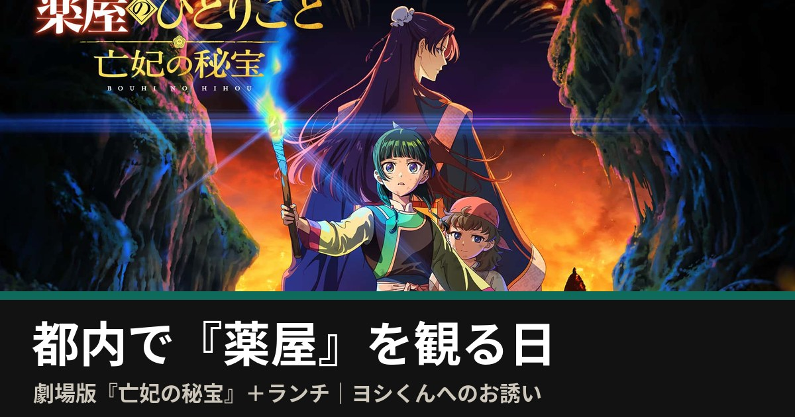
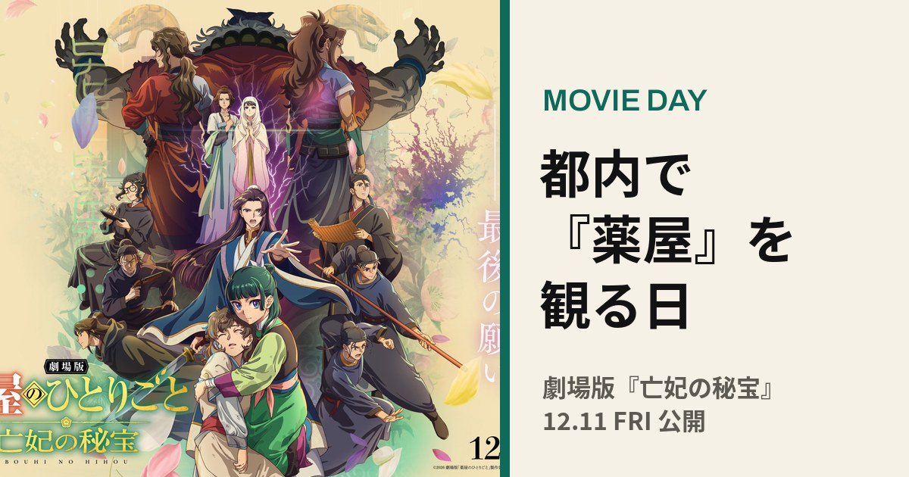
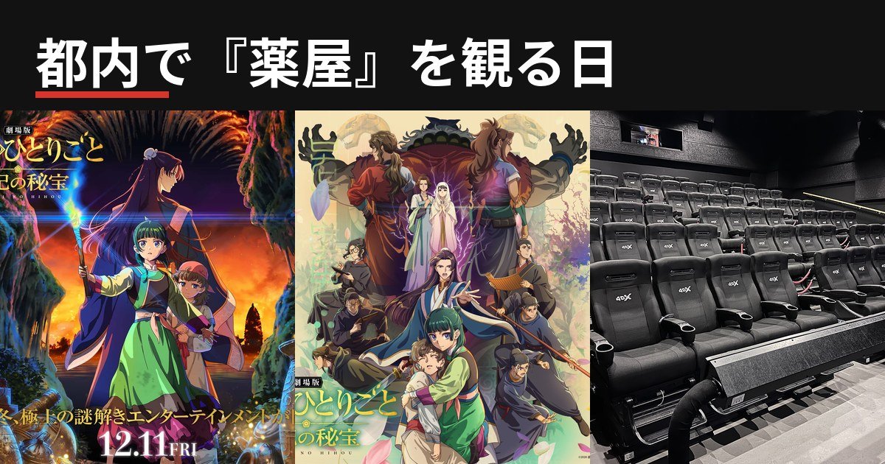
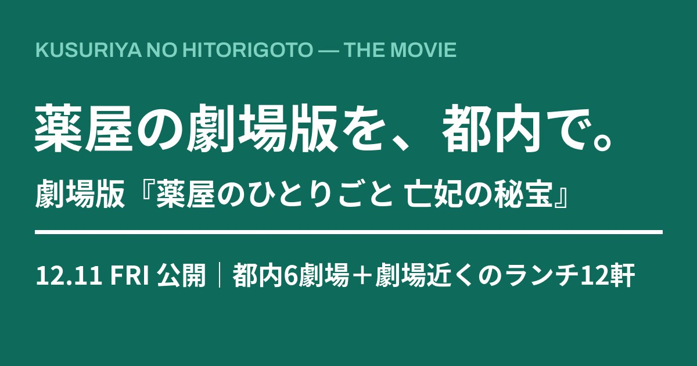
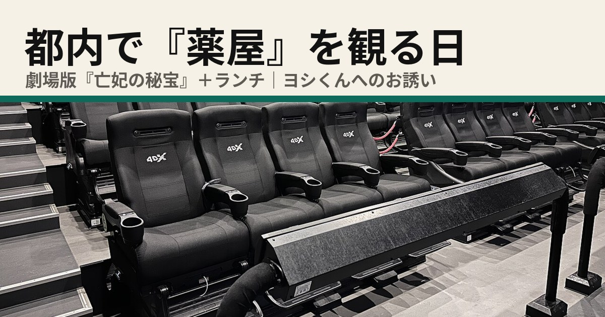

「都内で『薬屋』を観る日」（劇場版＋ランチの都内プラン）のOGP候補です。本体には仮で1番を設定済み。気に入った番号を教えてください。

メインキービジュアルを全面に、下に黒帯でタイトル。いちばん王道で作品の迫力が出ます。

第2弾キービジュアル（集合絵）を左に、右はクリーム地にタイトル。情報が読みやすく、登場人物の多さが伝わります。

KV2種＋劇場の座席を横並び。黒地＋白太字＋赤下線の見比べボード標準形です。

薬屋グリーンの地にタイポグラフィだけ。公開日と「都内6劇場＋ランチ12軒」が一目で伝わります。

映画館の座席写真を全面に、上にクリーム帯でタイトル。「映画を観に行く日」感がいちばん出ます。